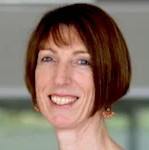
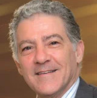

{% include base_path %}


{% for post in site.team %}
  {% include archive-single.html %}
{% endfor %}

<table>
  <tr>
    <td>
        
        <h2><a href="https://researchers.mq.edu.au/en/persons/mark-butlin">Dr Mark Butlin</a></h2>
        <h3>Research Head</h3>
        <p><a href="https://researchers.mq.edu.au/en/persons/mark-butlin/publications/">Publications</a></p>
    </td>
    <td>
      
      <h2><a href="https://researchers.mq.edu.au/en/persons/isabella-tan">Dr Isabella Tan</a></h2>
      <h3>CardieX AtCor Medical sponsored Postdoctoral Research Fellow</h3>
      <p><a href="https://researchers.mq.edu.au/en/persons/isabella-tan/publications/">Publications</a></p>
    </td>
    <td>
      
      <h2><a href="https://researchers.mq.edu.au/en/persons/karen-peebles">Dr Karen Peebles</a></h2>
      <h3></h3>
      <p><a href="https://researchers.mq.edu.au/en/persons/karen-peebles/publications/">Publications</a></p>
    </td>
    <td>
      
      <h2><a href="https://researchers.mq.edu.au/en/persons/alberto-avolio">Professor Emeritus Alberto Avolio</a></h2>
      <h3>Research Advisor</h3>
      <p><a href="https://researchers.mq.edu.au/en/persons/alberto-avolio/publications/">Publications</a></p>
    </td>
</tr>
<tr>
    <td>
      
      <h2><a href="https://researchers.mq.edu.au/en/persons/edward-barin">Clinical Associate Professor Edward Barin</a></h2>
      <h3>Clinical Advisor</h3>
      <p><a href="https://researchers.mq.edu.au/en/persons/edward-barin/publications/">Publications</a></p>
    </td>
    <td><h2>Bhargava Veppala</h2><h3>PhD candidate</h3> “Interaction of Cellular Processes and the Extracellular Matrix in Relation to Mechanical Properties of Blood Vessels”</td>
    <td><h2>Fatemeh Shirbani</h2><h3>PhD candidate</h3> “Measurement of blood pressure by imaged-based photoplethysmography”</td>
    <td><h2>Gisele Bentley</h2><h3>Masters of Research candidate</h3> “Comparison of active stand and tilt table testing for diagnosis of orthostatic hypotension and tachycardia syndrome”</td>
</tr>
<tr>
    <td><h2>James Cox</h2><h3>PhD candidate, scholarship part sponsored by Cardiex AtCor Medical</h3> “An investigation of non-invasive and cuffless approaches for the estimation of blood pressure”</td>
    <td><h2>Kathryn Busch</h2><h3>PhD candidate</h3> “The utilisation of transcranial Doppler and non-invasive pressure measurement to assess cerebrovascular haemodynamic alterations during arterio-venous malformation”</td>
    <td><h2>Kyrollos Louka</h2><h3>Masters of Research candidate</h3> “Personalised multi-point calibration curves obtained by controlled hydrostatic changes of the upper limb for cuffless estimation of blood pressure from pulse transit time”</td>
    <td><h2>Dr Stephen Woodford</h2><h3>PhD candidate</h3> “Cardiovascular Regulation in Human Aging”</td>
</tr>
<tr>
    <td><h2>Vaidehi Desai</h2><h3>Masters of Research candidate</h3> “Non-invasive baroreceptor function measurement in humans and the interaction with large artery stiffness”</td>
    <td><h2>Madison Kane</h2><h3>Masters of Research Research Rotation</h3> “Comparison of episodic and continuous blood pressure and heart rate recording in orthostatic intolerance testing”</td>
    <td><h2>Farhan Ahmed</h2><h3>Bachelor of Clinical Science Research Rotation</h3>“Effect of exercise on non-invasively assessed baroreceptor function”</td>
    <td><h2>Janani Viswanathan</h2><h3>Bachelor of Clinical Science Research Rotation</h3>“Cardiovascular response to induced bilateral leg ischaemia in the upright position”</td>
</tr>
</table>